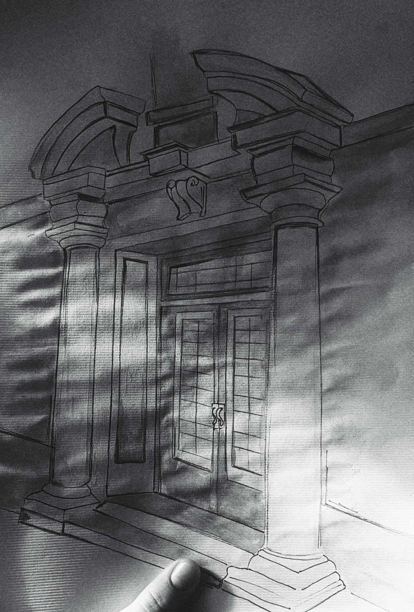
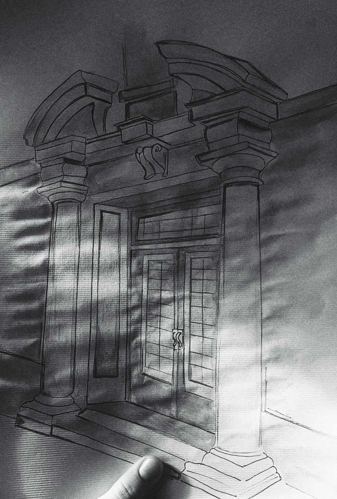

Здраво,
јас сум Ана
//15:13
a soul full of sunshine...
поблиску до ВасЈас сум Ана Пачемска, имам 20 години и доаѓам од малото ама симпатично градче Берово. Од досегашно образование имам завршено средно гимназиско, Природно-математичко подрачје комбинација Б, а сега сум редовен студент на Факултет за информатички науки и компјутерско инженерство во Скопје
Јас сум личност која е комуникативна, ведра и насмеана, организирана, одговорна, добар тимски соработник. Ана е многу грижлива личност, чувствителна, а притоа голем оптимист, личност која секогаш(буквално) ја бара позитивната страна на нештата.
пасии
Велат дека пасиите го движат човекот и јас потполно се согласувам со тоа. Пасиите придонесуваат да се чувствуваме среќно и исполнето. Секоја пасија треба да почне од љубов, како што воедно почна и мојата.
Во мои пасии ги вбројувам цртањето и сликањето, модата,а особено шминката и несомнено патувањата.
 


Ана е интересна, дружељубива и ведра. Умее да внесе позитивна и пријатна атмосфера. Знае да биде инаетлива, но честопати инаетот ѝ носи победи. Сепак, нејзиниот шарм во друштвото е привилегија.
Ана е најпозитивната и најтемпераментна личност и синоним за креативност, но за жал и несмасност🫣🥹. Нејзината луда перспектива кон животот, жарта која тлее во неа за нови успеси и нови освојувања, како и искрената и топла прегратка на крајот од денот се и повеќе од доволно да бидам сигурна дека таа е најдобрата другарка. Искрена, уникатна, единствена, весела, забавна, харизматична и уште многу повеќе епитети со кои можам да ја опишувам, но едноставно би рекла со еден збор, едно име, - Ана!
Ана ја знам уште од пелени и можам со сигурност да кажам дека нејзината креативост и инаетливост ја красат до ден денес. Умее вешто да црта, да се шминка, па дури успева и некои луди идеи да ги создаде во реалноста. Од друга страна пак кога е решена нешто да направи, дали тоа е паметно или не, никоја сила неможе да ја спречи во постигнувањето на својата цел.